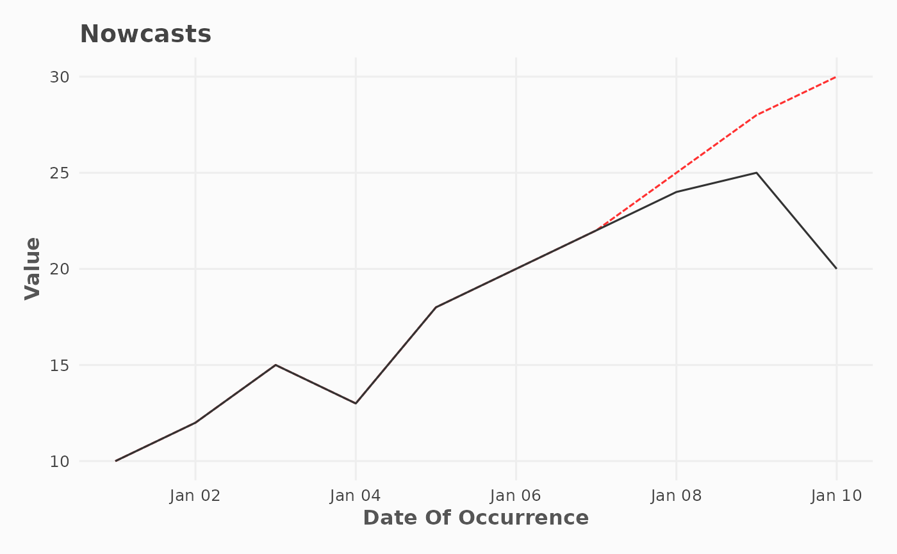

Compares observed data with nowcasted predictions over the occurrence date. Observed values are plotted as a solid grey line, and predicted values as a dashed black line.
Usage
plot_nowcast(
df,
col_date_occurrence,
col_value,
col_value_predicted,
group_cols = NULL,
color1 = "#333333",
color2 = "firebrick1"
)Arguments
- df
A data.frame or tibble.
- col_date_occurrence
Column name for the date of occurrence/reference.
- col_value
Column name for the value.
- col_value_predicted
Column name for the Predicted Value.
- group_cols
Optional character vector of column names for grouping.
- color1
Color for observed data.
- color2
Color for predicted data.
Examples
df_nowcast <- data.frame(
date_occurrence = as.Date("2023-01-01") + 0:9,
value_observed = c(10, 12, 15, 13, 18, 20, 22, 24, 25, 20),
value_predicted = c(10, 12, 15, 13, 18, 20, 22, 25, 28, 30)
)
plot_nowcast(
df = df_nowcast,
col_value = value_observed,
col_date_occurrence = date_occurrence,
col_value_predicted = value_predicted
)
